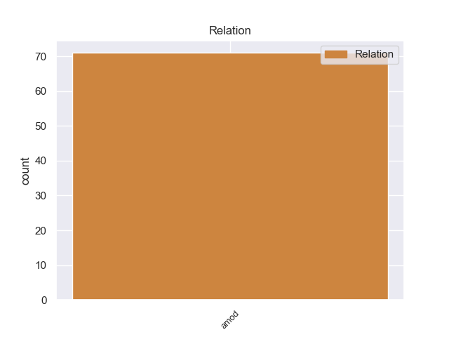
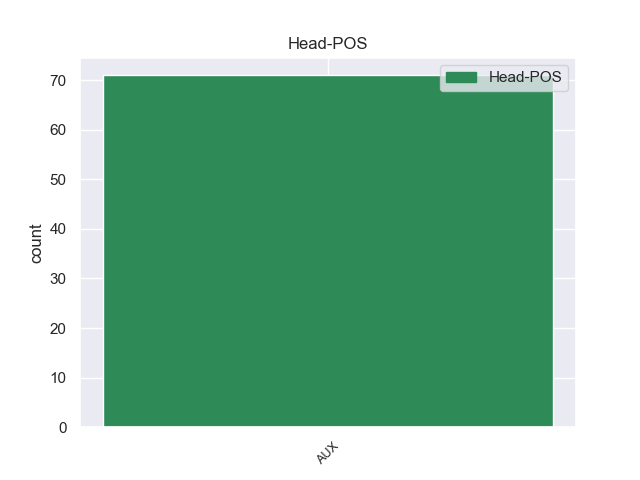
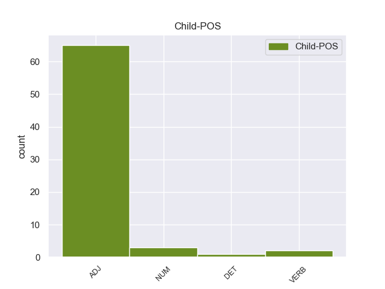

Distribution of features within this leaf



Agreement Rules sorted by frequency.
- When the dependent token is the adjectival modifier(amod) of the head token, and the head token is AUX
1 Αυτή _ _ _ _ 0 _ _ _
2 δεν _ _ _ _ 0 _ _ _
3 ήταν είμαι AUX AUX Aspect=Imp|Mood=Ind|Number=Sing|Person=3|Tense=Past|VerbForm=Fin|Voice=Pass 0 _ _ _
4 η _ _ _ _ 0 _ _ _
5 πρώτη πρώτος NUM NUM Case=Nom|Gender=Fem|Number=Sing|NumType=Ord 3 amod _ _
6 σύλληψη _ _ _ _ 0 _ _ _
7 του _ _ _ _ 0 _ _ _
8 Ουνταλτσόφ _ _ _ _ 0 _ _ _
9 , _ _ _ _ 0 _ _ _
10 ο _ _ _ _ 0 _ _ _
11 οποίος _ _ _ _ 0 _ _ _
12 βρέθηκε _ _ _ _ 0 _ _ _
13 αρκετές _ _ _ _ 0 _ _ _
14 φορές _ _ _ _ 0 _ _ _
15 σ _ _ _ _ 0 _ _ _
16 τη _ _ _ _ 0 _ _ _
17 φυλακή _ _ _ _ 0 _ _ _
18 και _ _ _ _ 0 _ _ _
19 το _ _ _ _ 0 _ _ _
20 2011 _ _ _ _ 0 _ _ _
21 . _ _ _ _ 0 _ _ _
Disagree Examples:
1 Οι _ _ _ _ 0 _ _ _
2 ασκήσεις _ _ _ _ 0 _ _ _
3 τέτοιου _ _ _ _ 0 _ _ _
4 τύπου _ _ _ _ 0 _ _ _
5 δεν _ _ _ _ 0 _ _ _
6 είναι _ _ _ _ 0 _ _ _
7 ασυνήθιστες _ _ _ _ 0 _ _ _
8 , _ _ _ _ 0 _ _ _
9 αλλά _ _ _ _ 0 _ _ _
10 συνήθως _ _ _ _ 0 _ _ _
11 επιβαρύνουν _ _ _ _ 0 _ _ _
12 ακόμα _ _ _ _ 0 _ _ _
13 περισσότερο _ _ _ _ 0 _ _ _
14 τις _ _ _ _ 0 _ _ _
15 σχέσεις _ _ _ _ 0 _ _ _
16 μεταξύ _ _ _ _ 0 _ _ _
17 των _ _ _ _ 0 _ _ _
18 δύο _ _ _ _ 0 _ _ _
19 χωρών _ _ _ _ 0 _ _ _
20 , _ _ _ _ 0 _ _ _
21 οι _ _ _ _ 0 _ _ _
22 οποίες _ _ _ _ 0 _ _ _
23 εξακολουθούν _ _ _ _ 0 _ _ _
24 να _ _ _ _ 0 _ _ _
25 είναι είμαι AUX AUX Aspect=Imp|Mood=Ind|Number=Plur|Person=3|Tense=Pres|VerbForm=Fin|Voice=Pass 0 _ _ _
26 τεχνικά _ _ _ _ 0 _ _ _
27 σε _ _ _ _ 0 _ _ _
28 εμπόλεμη εμπόλεμος ADJ ADJ Case=Acc|Gender=Fem|Number=Sing 25 amod _ _
29 κατάσταση _ _ _ _ 0 _ _ _
30 . _ _ _ _ 0 _ _ _
1 Απλουστευτικές _ _ _ _ 0 _ _ _
2 ενιαίες _ _ _ _ 0 _ _ _
3 λύσεις _ _ _ _ 0 _ _ _
4 , _ _ _ _ 0 _ _ _
5 όπως _ _ _ _ 0 _ _ _
6 η _ _ _ _ 0 _ _ _
7 περικοπή _ _ _ _ 0 _ _ _
8 του _ _ _ _ 0 _ _ _
9 χρόνου _ _ _ _ 0 _ _ _
10 εργασίας _ _ _ _ 0 _ _ _
11 σε _ _ _ _ 0 _ _ _
12 ευρωπαϊκό _ _ _ _ 0 _ _ _
13 επίπεδο _ _ _ _ 0 _ _ _
14 , _ _ _ _ 0 _ _ _
15 είναι είμαι AUX AUX Aspect=Imp|Mood=Ind|Number=Plur|Person=3|Tense=Pres|VerbForm=Fin|Voice=Pass 0 _ _ _
16 άνευ _ _ _ _ 0 _ _ _
17 σημαντικής σημαντικός ADJ ADJ Case=Gen|Gender=Fem|Number=Sing 15 amod _ _
18 ουσίας _ _ _ _ 0 _ _ _
19 . _ _ _ _ 0 _ _ _
1 Το _ _ _ _ 0 _ _ _
2 εστιακό _ _ _ _ 0 _ _ _
3 βάθος _ _ _ _ 0 _ _ _
4 της _ _ _ _ 0 _ _ _
5 δόνησης _ _ _ _ 0 _ _ _
6 υπολογίστηκε _ _ _ _ 0 _ _ _
7 σ _ _ _ _ 0 _ _ _
8 τα _ _ _ _ 0 _ _ _
9 5 _ _ _ _ 0 _ _ _
10 χιλιόμετρα _ _ _ _ 0 _ _ _
11 , _ _ _ _ 0 _ _ _
12 προκαλώντας _ _ _ _ 0 _ _ _
13 την _ _ _ _ 0 _ _ _
14 κατάρρευση _ _ _ _ 0 _ _ _
15 των _ _ _ _ 0 _ _ _
16 περισσοτέρων _ _ _ _ 0 _ _ _
17 μεσαιωνικών _ _ _ _ 0 _ _ _
18 κτισμάτων _ _ _ _ 0 _ _ _
19 σ _ _ _ _ 0 _ _ _
20 το _ _ _ _ 0 _ _ _
21 κέντρο _ _ _ _ 0 _ _ _
22 της _ _ _ _ 0 _ _ _
23 πόλης _ _ _ _ 0 _ _ _
24 , _ _ _ _ 0 _ _ _
25 αλλά _ _ _ _ 0 _ _ _
26 και _ _ _ _ 0 _ _ _
27 κτιρίων _ _ _ _ 0 _ _ _
28 που _ _ _ _ 0 _ _ _
29 ήταν είμαι AUX AUX Aspect=Perf|Mood=Ind|Number=Plur|Person=3|Tense=Past|VerbForm=Fin|Voice=Pass 0 _ _ _
30 νεότατης νέος ADJ ADJ Case=Gen|Degree=Sup|Gender=Fem|Number=Sing 29 amod _ _
31 κατασκευής _ _ _ _ 0 _ _ _
32 σ _ _ _ _ 0 _ _ _
33 τα _ _ _ _ 0 _ _ _
34 περίχωρα _ _ _ _ 0 _ _ _
35 και _ _ _ _ 0 _ _ _
36 σ _ _ _ _ 0 _ _ _
37 τα _ _ _ _ 0 _ _ _
38 γειτονικά _ _ _ _ 0 _ _ _
39 χωριά _ _ _ _ 0 _ _ _
40 . _ _ _ _ 0 _ _ _
1 Για _ _ _ _ 0 _ _ _
2 παράδειγμα _ _ _ _ 0 _ _ _
3 , _ _ _ _ 0 _ _ _
4 οι _ _ _ _ 0 _ _ _
5 μεταφορές _ _ _ _ 0 _ _ _
6 είναι είμαι AUX AUX Aspect=Imp|Mood=Ind|Number=Plur|Person=3|Tense=Pres|VerbForm=Fin|Voice=Pass 0 _ _ _
7 σήμερα _ _ _ _ 0 _ _ _
8 η _ _ _ _ 0 _ _ _
9 κύρια κύριος ADJ ADJ Case=Nom|Gender=Fem|Number=Sing 6 amod _ _
10 πηγή _ _ _ _ 0 _ _ _
11 ατμοσφαιρικής _ _ _ _ 0 _ _ _
12 ρύπανσης _ _ _ _ 0 _ _ _
13 σ _ _ _ _ 0 _ _ _
14 τις _ _ _ _ 0 _ _ _
15 αστικές _ _ _ _ 0 _ _ _
16 περιοχές _ _ _ _ 0 _ _ _
17 , _ _ _ _ 0 _ _ _
18 και _ _ _ _ 0 _ _ _
19 παρά _ _ _ _ 0 _ _ _
20 τις _ _ _ _ 0 _ _ _
21 βελτιώσεις _ _ _ _ 0 _ _ _
22 σ _ _ _ _ 0 _ _ _
23 την _ _ _ _ 0 _ _ _
24 ποιότητα _ _ _ _ 0 _ _ _
25 του _ _ _ _ 0 _ _ _
26 αέρα _ _ _ _ 0 _ _ _
27 σ _ _ _ _ 0 _ _ _
28 την _ _ _ _ 0 _ _ _
29 Ευρώπη _ _ _ _ 0 _ _ _
30 κατά _ _ _ _ 0 _ _ _
31 την _ _ _ _ 0 _ _ _
32 τελευταία _ _ _ _ 0 _ _ _
33 δεκαετία _ _ _ _ 0 _ _ _
34 , _ _ _ _ 0 _ _ _
35 σχεδόν _ _ _ _ 0 _ _ _
36 το _ _ _ _ 0 _ _ _
37 90% _ _ _ _ 0 _ _ _
38 του _ _ _ _ 0 _ _ _
39 αστικού _ _ _ _ 0 _ _ _
40 πληθυσμού _ _ _ _ 0 _ _ _
41 εξακολουθεί _ _ _ _ 0 _ _ _
42 να _ _ _ _ 0 _ _ _
43 εκτίθεται _ _ _ _ 0 _ _ _
44 σε _ _ _ _ 0 _ _ _
45 πολύ _ _ _ _ 0 _ _ _
46 υψηλά _ _ _ _ 0 _ _ _
47 επίπεδα _ _ _ _ 0 _ _ _
48 σωματιδίων _ _ _ _ 0 _ _ _
49 , _ _ _ _ 0 _ _ _
50 διοξειδίου _ _ _ _ 0 _ _ _
51 του _ _ _ _ 0 _ _ _
52 αζώτου _ _ _ _ 0 _ _ _
53 , _ _ _ _ 0 _ _ _
54 βενζολίου _ _ _ _ 0 _ _ _
55 και _ _ _ _ 0 _ _ _
56 όζοντος _ _ _ _ 0 _ _ _
57 σ _ _ _ _ 0 _ _ _
58 τον _ _ _ _ 0 _ _ _
59 ατμοσφαιρικό _ _ _ _ 0 _ _ _
60 αέρα _ _ _ _ 0 _ _ _
61 , _ _ _ _ 0 _ _ _
62 τα _ _ _ _ 0 _ _ _
63 οποία _ _ _ _ 0 _ _ _
64 ενδέχεται _ _ _ _ 0 _ _ _
65 να _ _ _ _ 0 _ _ _
66 επηρεάζουν _ _ _ _ 0 _ _ _
67 τις _ _ _ _ 0 _ _ _
68 αναπνευστικές _ _ _ _ 0 _ _ _
69 λειτουργίες _ _ _ _ 0 _ _ _
70 και _ _ _ _ 0 _ _ _
71 να _ _ _ _ 0 _ _ _
72 οδηγούν _ _ _ _ 0 _ _ _
73 σε _ _ _ _ 0 _ _ _
74 άλλα _ _ _ _ 0 _ _ _
75 προβλήματα _ _ _ _ 0 _ _ _
76 υγείας _ _ _ _ 0 _ _ _
77 και _ _ _ _ 0 _ _ _
78 παθήσεις _ _ _ _ 0 _ _ _
79 , _ _ _ _ 0 _ _ _
80 όπως _ _ _ _ 0 _ _ _
81 ο _ _ _ _ 0 _ _ _
82 καρκίνος _ _ _ _ 0 _ _ _
83 και _ _ _ _ 0 _ _ _
84 οι _ _ _ _ 0 _ _ _
85 καρδιαγγειακές _ _ _ _ 0 _ _ _
86 παθήσεις _ _ _ _ 0 _ _ _
87 . _ _ _ _ 0 _ _ _
1 Αλλά _ _ _ _ 0 _ _ _
2 , _ _ _ _ 0 _ _ _
3 το _ _ _ _ 0 _ _ _
4 σημαντικότερο _ _ _ _ 0 _ _ _
5 όλων όλος ADJ ADJ Case=Gen|Gender=Masc|Number=Plur 6 amod _ _
6 είναι είμαι AUX AUX Aspect=Imp|Mood=Ind|Number=Sing|Person=3|Tense=Pres|VerbForm=Fin|Voice=Pass 0 _ _ _
7 ότι _ _ _ _ 0 _ _ _
8 πρέπει _ _ _ _ 0 _ _ _
9 να _ _ _ _ 0 _ _ _
10 θεωρηθεί _ _ _ _ 0 _ _ _
11 ως _ _ _ _ 0 _ _ _
12 μια _ _ _ _ 0 _ _ _
13 κίνηση _ _ _ _ 0 _ _ _
14 προς _ _ _ _ 0 _ _ _
15 τη _ _ _ _ 0 _ _ _
16 διασφάλιση _ _ _ _ 0 _ _ _
17 καλύτερων _ _ _ _ 0 _ _ _
18 δημόσιων _ _ _ _ 0 _ _ _
19 υπηρεσιών _ _ _ _ 0 _ _ _
20 για _ _ _ _ 0 _ _ _
21 όλους _ _ _ _ 0 _ _ _
22 τους _ _ _ _ 0 _ _ _
23 ανθρώπους _ _ _ _ 0 _ _ _
24 . _ _ _ _ 0 _ _ _